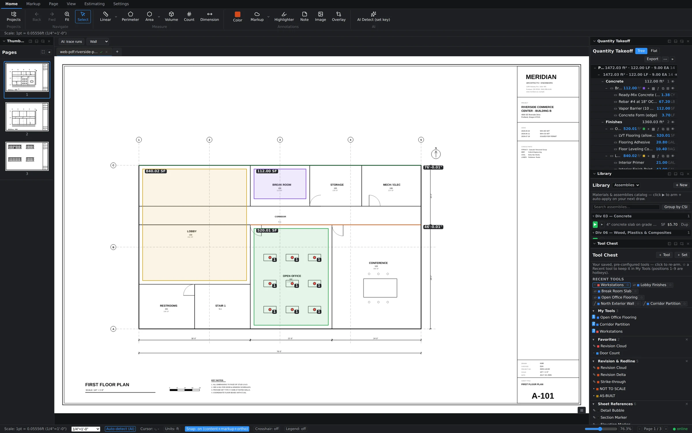

The Markup ribbon
Switch to the Markup tab and the ribbon lays out the review toolkit: Color, general Markup shapes, Highlighter, Note, Redact, Revision Delta, Cloud+, Stamp, Signature, plus the Tool Chest, Revisions, and Legend panels.

A quick tour of the ones you'll reach for most:
- Cloud+ — draw a revision cloud around changed work so it can't be missed on review.
- Revision Delta — drop the numbered triangle that ties a cloud back to an ASI, RFI, or addendum.
- Stamp & Signature — place approval stamps and sign-offs directly on the sheet.
- Note & Highlighter — pin comments where they apply and sweep color over the text you're referencing.
- Redact — block out anything that shouldn't leave the office.
Markups live alongside your takeoffs — clouding a room doesn't touch its measured quantities, and both show up together in the markups list.
Recent tools: zero-setup reuse
Open the Tool Chest panel and the top section, Recent Tools, fills itself. Every tool you place this session — a count subject like "Workstations," an armed flooring assembly, a wall run — is captured as a chip, styling and all. Click a chip to arm that exact tool again. No hunting back through the library for the thing you used two minutes ago.

My Tools: your 1–9 hotkeys
Recent Tools resets with the session; My Tools is permanent. Promote a tool into My Tools and it picks up a numbered badge — the first nine slots map straight to the 1–9 keys. Press the digit, the tool arms, and you're drawing. Reorder the list with the ▲▼ controls; the hotkey follows the position, so slot 1 is always whatever you've put first.
- Place a tool once, or find it in Recent Tools.
- Promote it to My Tools.
- Order the list so your everyday tools sit in slots 1–3.
- Work the sheet with one hand on the keyboard: 1, draw, 2, draw.
Favorites and tool sets
Below My Tools, the chest keeps Favorites (staples like Revision Cloud and Door Count) and grouped sets such as Revision & Redline and Sheet References — ready-made collections for common review workflows.